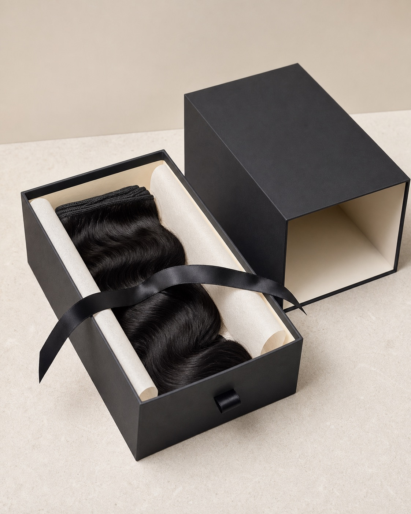

Hair-category focus
Human hair, synthetic hair and salon supplies are kept commercially clear for specification and repeat ordering.
ABOUT D.S HAIR
WigExporter is the global wholesale and OEM entry point for D.S Hair Beauty. We help professional buyers define, sample, brand and reorder hair products with clearer communication.
OUR STORY
Our business journey began in 2005 and moved into hair products in 2007. Manufacturing knowledge and long-term export relationships followed, including professional buyers across Europe and other overseas markets.
Today, we focus on wigs, toppers, hair additions, extensions and salon supplies—with sample, colour and private-label support under one sourcing relationship.
WHY CHOOSE US
Our role is not simply to show a catalogue. We help buyers reduce sourcing uncertainty before scaling.
Human hair, synthetic hair and salon supplies are kept commercially clear for specification and repeat ordering.
Review construction, fibre or hair quality, colour and packaging direction before repeat production.
Build product and brand details around your market rather than accepting a one-size-fits-all range.
BY THE NUMBERS
These are verified facts about the D.S Hair Beauty supply record — not marketing claims.
19+
Operating in the international hair-products industry since 2007.
50+
Private-label and wholesale programmes supported for more than fifty hair brands.
UK & EU
Long-term supply relationships with professional buyers across the UK and Europe.
2 tracks
WigExporter for global B2B & OEM, plus a UK salon brand (D.S Hair Beauty).
YOUR PARTNER
We coordinate the details that make a wholesale relationship workable: product direction, colour references, sample approval, packaging, production communication and export support.
The packaging visual is an original, client-neutral concept preview—not a photograph of a finished customer order.
Two routes, one supply engine: WigExporter for global wholesale & OEM, and D.S Hair Beauty for the UK salon market.

2005
The start of the founder’s international trade journey.
2007
The business moved into the global hair-products industry.
2009+
Manufacturing and overseas buyer relationships developed.
Today
Wholesale, OEM and private-label support through WigExporter.